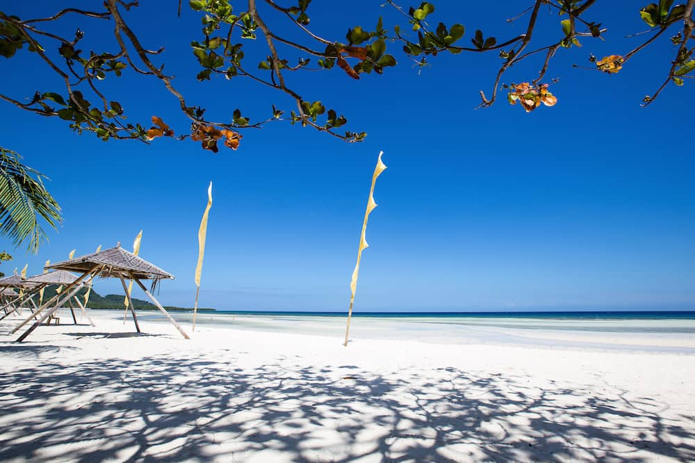
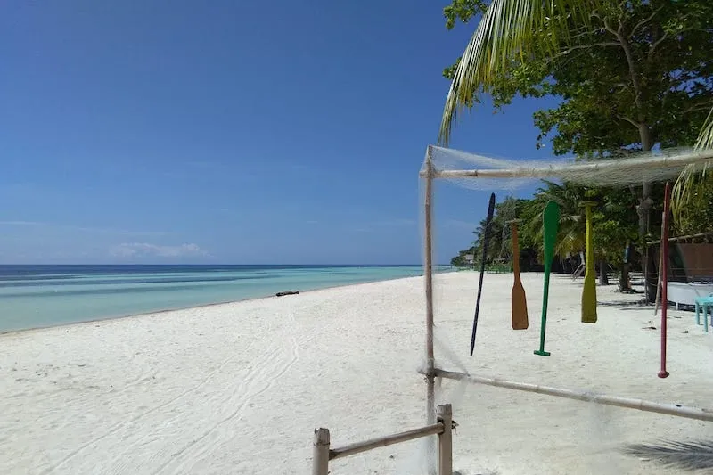
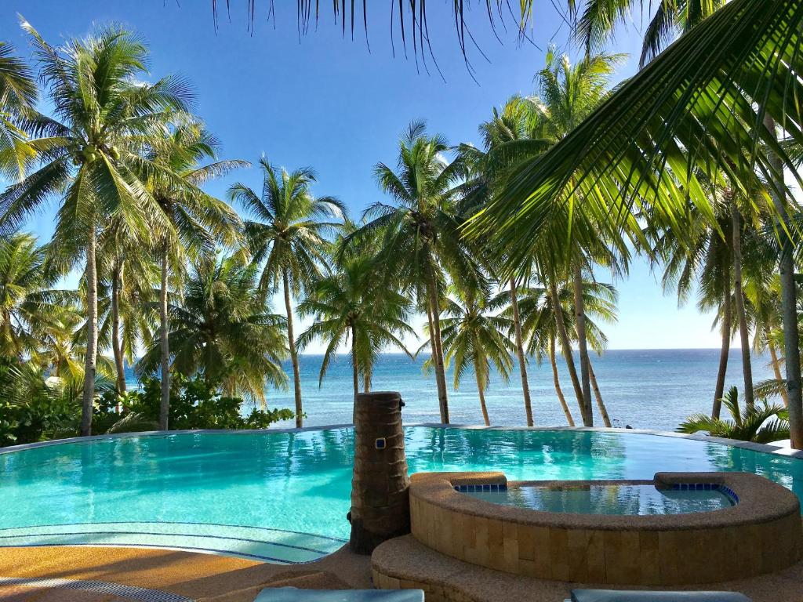

Nestled on the eastern coast of Bohol, Anda Beach is a secluded paradise that offers a tranquil escape from the crowds.
With its remote location & limited tourist infrastructure,
Anda Beach remains relatively untouched, allowing visitors to
experience the true essence of pristine natural beauty.
The beach stretches for kilometers, boasting powdery white sands
that feel like silk underfoot. The azure waters teem with vibrant marine life, making it a haven for divers and snorkelers.
Anda Beach is the perfect destination if you’re looking for a slice of paradise away from the usual tourist hotspots.
Travelers can visit Alona Beach all year round. The best time to visit is around November to April when the weather in the Philippines is cooler. There are also fewer chances of rain during these months, so you can make the most of your trip to this pristine beach.
Traveling to or from Alona Beach is easy. Located on Panglao Island off the coast of Bohol, Alona Beach is a short 20km ride from Tagbilaran. With daily flights from Manila to Tagbilaran and fast boats from Cebu and Dumaguete, Alona Beach is easy to get to from anywhere in the Philippines.
From Manila you will need to fly to Tagbilaran (via Philippine Airlines or Cebu Pacific) and then make your way to Alona Beach from there.
Head to the pier and take a fast ferry to Tagbilaran, Bohol. They leave daily and cost 500P. The trip takes around 2 hours.
Head to the pier and take a fast ferry to Tagbilaran, Bohol. They leave daily and cost 650P. The trip takes around 2 hours.
Alona Beach is known as a world-class dive destination. In fact, the first thing
you will notice about the place is all the dive boats! There are dozens of them always docked in the water,
waiting to take divers/snorkelers out for some underwater adventure!
 About 100 meters out is the house reef which is a great place to see the marine life. Be sure to also check out
Balicasag and Pamilacan islands for amazing diving and snorkeling.
You will need to hire a dive boat, but there are plenty around.
About 100 meters out is the house reef which is a great place to see the marine life. Be sure to also check out
Balicasag and Pamilacan islands for amazing diving and snorkeling.
You will need to hire a dive boat, but there are plenty around.
Alona Beach is a great place to just sit back and relax. Sitting on the beach, drinking a cold beer, watching the sun go down... Be sure to to get a massage while you are here. They are cheap and you can have them right on the beach!
There are a variety of great restaurants right on the beach. Pizza, Swiss, Italian,
Thai or native dishes are all available at reasonable prices.
 Alona Beach is not known for it's crazy nightlife. In general it is a quiet, romantic place at night.
Restaurants set up candle-lit tables on the beach and couples and groups gather to eat good food and
listen to live acoustic music right on the beach.
Alona Beach is not known for it's crazy nightlife. In general it is a quiet, romantic place at night.
Restaurants set up candle-lit tables on the beach and couples and groups gather to eat good food and
listen to live acoustic music right on the beach.